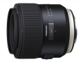

镜头的光学设计中使用了LD低色散镜片和XLD超级低色散镜片，最大限度降低色散，拍摄出清晰锐利，具有高保真色彩的照片。引人入胜的背景虚化效果可突出前景主体。简易防护构造保护镜头内部免受水汽侵扰，镜头前端首枚镜片的高耐久氟涂层可有效防止凝露和油污附着。这支全新的镜头是继35/1.8，45/1.8以及90mm Macro之后全新SP系列的又一重要产品。
体积和重量都很巨大，超越尼康85f1.4G 我可能是淘宝第一个买家，发售第三天就买了，当时没看到次镜头有销售记录。 防抖十分实用，防雨淋让我在恶劣天气中信心倍增。画质很好，1.8和4画质区别不大。
防抖，防雨淋，画质很好。第一片镜片氟涂层让我不想给镜头配UV
大，重